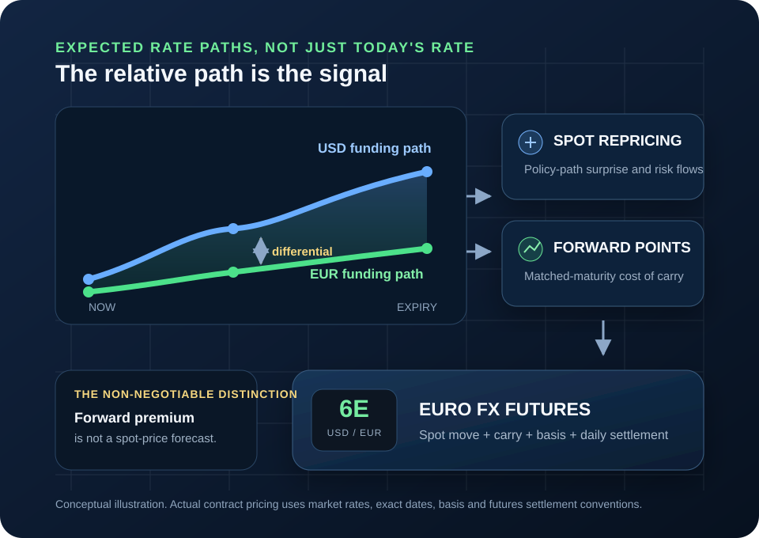

Euro FX macro-pricing guide
How Rate Differentials Drive 6E: Fed, ECB and Euro FX Futures
6E does not move because one central bank has the higher headline rate. It reprices when the market changes its view of the relative US and euro rate paths—and the futures curve also embeds a separate, mechanical cost-of-carry relationship.

Start with the quote convention
What a Rate Differential Means for 6E
CME Euro FX futures are quoted in US dollars per euro. A rising 6E price means one euro buys more dollars; a falling price means one euro buys fewer dollars. Every rate comparison must respect that quote direction.
125,000 euros
CME lists the standard Euro FX contract at 125,000 euros. The outright minimum price increment is 0.00005 USD per EUR, equal to $6.25 per contract.
USD rate minus EUR rate
This guide uses rUSD − rEUR. A positive number means matched-maturity dollar rates are higher than comparable euro rates.
What changed versus what was priced
A rate decision matters through the gap between the outcome and the market’s prior expectation—especially the expected path after the meeting.
Forward price minus spot
Forward points compensate for the difference between comparable currency funding returns. They are a carry relationship, not a directional forecast.
The governing principle
Markets Trade the Expected Path, Not the Last Decision
Suppose the ECB raises its deposit rate by 25 basis points. That fact alone does not determine the next 6E move. If the increase was fully expected and the press conference implies no further tightening, euro-rate expectations can fall and 6E can sell off. The rate went up; the expected path went down.
The same logic applies to the Federal Reserve. A rate cut can strengthen the dollar if traders expected a larger cut or if the guidance removes expected future cuts. The relevant question is always: what changed in the US path relative to the euro path?
From news to futures price
The Rate-Differential Transmission Chain
Rate-sensitive releases and central-bank communication move 6E through a sequence. Skipping a link in that sequence is how traders turn a useful macro framework into a slogan.
-
01
New information arrives
Inflation, employment, wages, growth, financial stress, an ECB decision, or an FOMC statement differs from the market’s expected outcome.
-
02
Expected policy paths reprice
Traders revise the probability, timing, and size of future Fed and ECB moves. The revision can matter more than today’s announced rate.
-
03
Matched-maturity yields move
Overnight-indexed and short-dated market rates change across the relevant horizon. A front contract and a distant contract do not have identical rate exposure.
-
04
Spot EUR/USD and risk premia adjust
Capital allocation, hedging demand, positioning, and dollar funding needs transmit the policy surprise into the spot exchange rate—sometimes immediately.
-
05
6E reprices
The contract reflects the spot move plus forward carry for its remaining maturity, with possible basis and futures-versus-forward differences.
If the expected US rate path rises relative to the euro path, the dollar often strengthens and front 6E price action often falls. If the expected euro path rises relative to the US path, the euro often strengthens and 6E often rises. “Often” is deliberate: risk premia, growth expectations, positioning, and funding stress can overwhelm the simple read.
Use the right inputs
Which Rates Actually Deserve Attention?
No single line is “the” rate differential. Use an input that matches the question and the contract horizon.
Fed target range and ECB deposit facility
These anchor the current stance. They are essential context but can lag what futures and swaps already price for the next meetings.
EFFR, SOFR and €STR
These are published reference rates based on defined transaction sets. They describe actual overnight funding conditions more directly than a policy headline.
Market-implied rates aligned with expiry
For contract analysis, compare expected dollar and euro rates over a maturity close to the futures expiry. This is more precise than comparing unrelated tenors.
Two-year government-yield spread
US-versus-German two-year yields can summarize policy expectations, term premium, and sovereign effects. They are useful context, not a clean funding-rate substitute.
The mechanical side of the curve
Covered Interest Parity and 6E Forward Pricing
For an exchange rate quoted as US dollars per euro, a simplified covered-interest-parity relationship is:
F = S × 1 + rUSDT1 + rEURT
- F
- Theoretical USD-per-EUR forward price
- S
- Current USD-per-EUR spot price
- T
- Time to maturity as a fraction of a year
The theoretical forward is above spot
The USD-per-EUR forward quote carries a premium. That does not say spot EUR/USD is expected to rise. It equalizes covered returns under the simplified assumptions.
The theoretical forward is below spot
The USD-per-EUR forward quote carries a discount. Again, the sign describes carry, not a guaranteed future spot direction.
Interactive teaching model
6E Forward-Points Calculator
Use comparable annualized rates for the same horizon. The defaults are illustrative inputs, not live rates and not a fair-value trading signal.
Simplified result
Matched-maturity carry
- USD − EUR rate differential
- +2.00%
- Theoretical forward price
- 1.16569
- Forward points
- +0.00569
- Approximate 6E ticks
- +113.8
- Approximate value per 6E
- +$711.12
The theoretical forward is above spot because the USD input is higher than the EUR input. This is carry, not a spot forecast.
Worked policy-path scenarios
Four Ways the Same Headline Can Produce a Different 6E Move
These are mechanism examples, not trade recommendations. The result depends on what was priced, how the full yield curves move, and whether price accepts the first reaction.
| Scenario | Path repricing | First-order 6E read | Why the read can fail |
|---|---|---|---|
| US inflation exceeds consensus | Expected Fed path rises more than ECB path | Dollar stronger; 6E lower | The surprise was already positioned, growth fears dominate, or the move is quickly faded. |
| ECB delivers a hawkish surprise | Expected euro path rises relative to US path | Euro stronger; 6E higher | The decision hurts euro-area growth expectations or guidance undercuts the headline action. |
| Fed cuts by the expected amount | Little change, or future cuts are priced out | Muted reaction, or 6E lower | The word “cut” is not the surprise; the revised path is. |
| Global funding stress | Policy spread may be unchanged | Dollar demand can push 6E lower | Liquidity preference and dollar funding can overpower the clean rate-spread story. |
For the event calendar and the mechanics of the first reaction, use the companion guide to CPI, NFP, FOMC and ECB volatility in 6E.
Match the horizon
Why the Front Contract and a Distant Contract Can React Differently
A rate differential is a curve, not a single number. Every 6E expiry has a different remaining horizon, so a repricing concentrated in the next meeting does not affect all contracts identically.
Front contracts respond most directly
A change centered on the next one or two meetings can alter spot and short-dated carry sharply while leaving longer-horizon expectations less changed.
The curve can move across expiries
A durable change in expected policy or inflation can shift multiple maturities and alter the spacing between contracts.
Contract switches can create false comparisons
Raw contracts can trade at different prices because of carry. A continuous chart may back-adjust that gap. Know the method before labeling a rollover gap as a market move.
A repeatable pre-trade process
Turn the Macro Thesis Into a Falsifiable 6E Plan
The rate view is context. The actual trade still needs a defined trigger, invalidation point, and position size that fits the account’s real loss capacity.
-
Define the exact contract and horizon
Record the 6E expiry, days remaining, and whether your chart is a raw or adjusted continuous series.
-
Write the expected policy paths before the event
State what is already priced for the Fed and ECB. A post-event explanation is not a testable thesis.
-
Specify what would widen or narrow the differential
List the data or language that would move the relevant USD and EUR maturities. Include a scenario where both paths move together.
-
Watch the matched rates and 6E together
If 6E moves without confirmation from the expected rate path, treat the explanation as uncertain rather than forcing the rate story onto price.
-
Demand price acceptance
A headline spike is not acceptance. Use market structure, follow-through, or 6E order flow to judge whether the repricing is holding.
-
Place the valid stop, then size
Define where the trade idea is wrong. Convert that distance into dollars per contract and use the real drawdown-buffer sizing guide. If one contract does not fit, skip the trade.
Common analytical failures
Rate-Differential Mistakes That Create False Confidence
Current settings can be old information. The market trades revisions to the path.
Carry makes a matched-maturity forward differ from spot even when nobody expects spot to finish there.
A two-year yield spread is not the same object as a three-month funding differential for a near expiry.
6E is USD per EUR. Reversing the quote flips the algebra and the language.
Rates and FX can respond to the same surprise, while risk premia and positioning change the observed relationship.
Back adjustment can remove roll gaps; an unadjusted series preserves them. Know what the chart vendor did.
A hike can be dovish and a cut can be hawkish relative to prior pricing.
A good narrative does not repair an invalid stop or an oversized dollar loss.
Final decision checklist
Before Acting on a Fed–ECB Rate View
Unknown inputs are a reason to reduce confidence, not a reason to invent precision.
Quote: I am reading 6E as US dollars per euro.
Expectation: I know what the market appeared to price before the event.
Horizon: My USD and EUR rates match each other and are relevant to the contract expiry.
Mechanism: I separated spot repricing from forward carry.
Confirmation: Rates, price structure, and the intended direction are not contradicting each other.
Risk: The technically valid stop fits the planned dollar budget after estimated costs.
Frequently asked questions
6E Rate-Differential Questions
What rate differential matters most for 6E?
The useful differential is the market’s expected dollar-versus-euro rate path over the horizon that matches the 6E contract, not merely the difference between today’s headline Federal Reserve and ECB policy rates.
Why can 6E fall after the ECB raises rates?
6E can fall if the hike was already priced, the ECB’s guidance is less restrictive than expected, the Federal Reserve path reprices higher by more, or broader dollar demand dominates the policy-rate news.
Does a higher US interest rate mean 6E must fall?
No. A wider expected US rate advantage can support the dollar and pressure 6E spot-style price action, but exchange rates also reflect expectations, growth, inflation, risk premia, funding stress, positioning, and capital flows.
Why can a 6E futures contract trade above EUR/USD spot when US rates are higher?
For a USD-per-EUR quote, covered interest parity places the matched-maturity forward above spot when comparable US rates exceed euro rates. That forward premium is a cost-of-carry relationship, not a prediction that EUR/USD spot will rise.
Which rates should a 6E trader monitor?
Monitor official Fed and ECB decisions, transaction-based overnight benchmarks such as EFFR or SOFR and the euro short-term rate, and market-implied rates for maturities aligned with the contract. Two-year government yields can be a useful public proxy but are not a substitute for matched-maturity funding rates.
Sources and methodology
Official and Primary Sources
- CME Group: 2026 FX Product Guide for the standard 6E contract size, quote convention, and tick specification.
- European Central Bank: Key ECB interest rates and Euro short-term rate (€STR).
- Federal Reserve: FOMC calendars, statements, and minutes and Federal Reserve Bank of New York: Reference rates.
- Federal Reserve: Dollar Funding and the Lending Behavior of Global Banks for the covered-interest-parity relationship between currency interest rates, spot, and forward exchange rates.
- Federal Reserve: Exchange Rates, Monetary Policy Statements, and Uncovered Interest Parity for the distinction between conditional policy effects, expectations, and risk premia.
Exchange and institutional pages were checked August 5, 2026. The calculator formula is shown openly on the page; results are rounded for display.